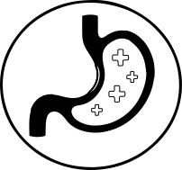

Glowing Skin
The most popular reason for collagen supplementation is to achieve glowing skin, which it does by increasing elasticity, improving hydration, and strengthening your skin barrier. Glo Collagen Water will significantly improve the skin’s collagen content, collagen fibres and antioxidant activity helping to reduce wrinkles, increase skin moisture and revive your overall complexion.
Beautiful Hair
Glo Collagen Water will help regenerate dormant hair follicles, stimulating hair growth and preventing hair loss, leaving you with beautiful, strong, replenished hair. Thanks to its amazing antioxidant activity it will also help slow the inevitable greying of hair as we age.
Strong Nails
Glo Collagen Water can influence your nail metabolism from the inside, stimulating blood flow to the nail roots. Collagen is one of the major protein constituents in your nail bed, helping to prevent brittleness and boosting your nail growth.
Increased Strength & Better Recovery
Collagen can make the recycling of ATP (the energy currency in your cells) more efficient, which helps increase muscular strength and power, boosting your energy and increasing your overall physical performance. The amino acids in collagen can help speed athletic recovery after a workout or physical activity.
Reduced Joint & Bone Pain
From common joint pain to osteoarthritis and rheumatoid arthritis, collagen stimulates cartilage production, which cushions the joints, reducing joint pain and offering relief from aching bones.
Promote Weight Loss
Since collagen is a complex protein, it can help to keep you feeling full, preventing the intake of unnecessary calories and promoting weight loss.
Improved Gut & Overall Health
Collagen can reduce symptoms of “leaky gut” by helping your body to repair microscopic holes in the gut lining. Collagen can be found throughout all of our connective tissues, making supplementation of collagen great for all-round body health.
